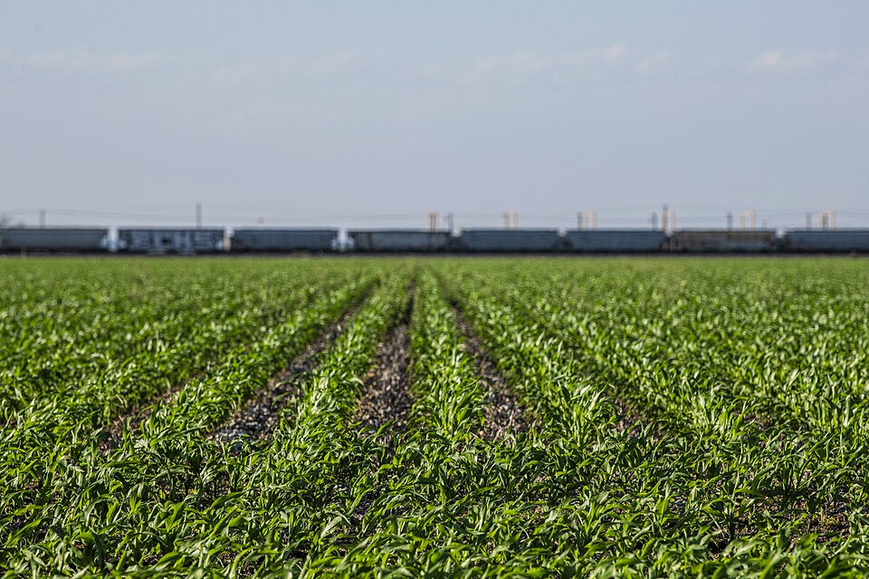
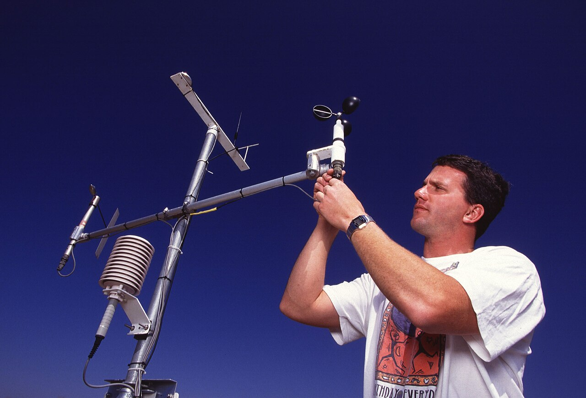
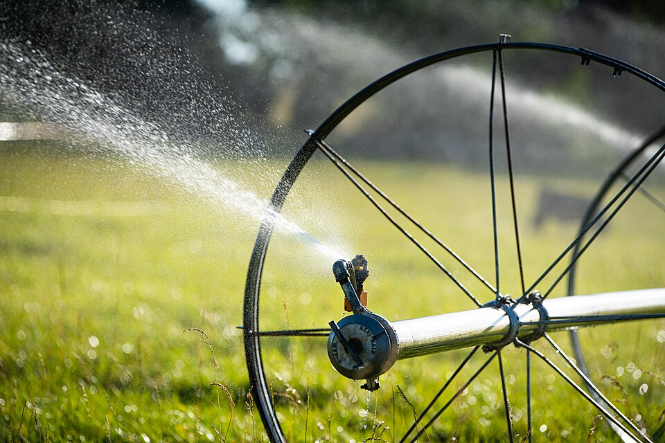

SPATIAL INTELLIGENCE FOR AGRICULTURE
From satellite pixels to field decisions.
An integrated showcase of web GIS, QGIS plugins and research applications for geospatial analysis, remote sensing, agricultural systems and agroclimatology.
GISRemote SensingQGISLiDARAgroclimate
FIELD INTELLIGENCE Spatial layers
Sentinel imageryVector analyticsWeather intelligence
DIGITAL TOOL SHOWCASE
One ecosystem. Multiple research tools.
Discover geospatial platforms, QGIS extensions and decision-support applications designed around real agricultural and environmental workflows.
Flagship platform
AgriGeo Analytics Portal
Integrated agricultural GIS, remote sensing, agroclimatology and water-management workspace with preprocessing, analysis, mapping, reports and export.
WMS/WFS/WMTSGDAL/OGRLiDAR
SATHI
Spatial aggregation, temporal harmonization and interpolation workflows for climate and geospatial datasets inside QGIS.
RasterNetCDFTemporal
Spatial Aggregation Mean
Aggregate raster or gridded observations over polygons and spatial zones to generate reproducible mean-value summaries for mapping and analysis.
Zonal meanRasterAggregation
LiDAR AutoVector Studio
Point-cloud workflow studio for LiDAR preprocessing, terrain interpretation and assisted conversion of derived features into GIS-ready vector layers.
LAS / LAZPoint cloudVector
No tools match this filter. Try another category or search term.
RESEARCH DOMAINS
Built where spatial science meets farming systems.
Each domain contributes a different layer of evidence—from terrain and imagery to weather, crops and field management.
GIS & Spatial Analysis
Vector overlay, raster processing, terrain modelling, geostatistics, OGC services and spatial data infrastructure.
- Raster & vector analytics
- Web mapping & OGC
- LiDAR & terrain
Remote Sensing
Satellite, UAV and field-image workflows for crop condition, land-cover mapping and biophysical assessment.
- Multispectral imagery
- Vegetation indices
- Image classification
Agriculture
Digital tools that connect spatial evidence with crops, soils, water, field observations and farm-management decisions.
- Crop monitoring
- Soil & water management
- Decision support
Agroclimatology
Weather, climate extremes, ET, rainfall and agro-advisory intelligence for climate-resilient agricultural planning.
- Weather & climate data
- ET & water requirement
- Climate-risk analytics
REAL-WORLD FIELD INTELLIGENCE
Agriculture, climate and water—made interactive.
Explore three domain views using real public-domain agricultural photographs with live analysis overlays. Move the controls to see how spatial indicators can be presented on the landing page.

AGRICULTURECrop condition
Crop vigor0.72NDVI
Field & Crop Intelligence
Combine field imagery, crop vigor and spatial observations to move from visual inspection to map-ready agricultural evidence.

AGROCLIMATOLOGYWeather observations
Air temperature24.6°C
Agroclimate Monitoring
Translate weather-station observations into crop-relevant climate indicators for ET, rainfall, heat and advisory workflows.

WATER MANAGEMENTIrrigation intelligence
Gross irrigation34mm
Water Management Analytics
Connect ET, rainfall, irrigation demand and water-storage decisions with spatial field context and export-ready analysis.
Photography: USDA / USDA ARS / USDA NRCS public-domain imagery, locally packaged with this GeoPortal build.
CONNECTED WORKFLOW
Bring data in. Analyze it. Turn it into evidence.
The platform architecture is designed around reproducible geospatial workflows rather than isolated visualization.
Start a GIS workflow01INGESTRaster · Vector · LiDAR · OGC · Climate
→
02PROCESSGDAL · OGR · PDAL · QGIS workflows
→
03ANALYZESpatial · RS · Agriculture · Climate
→
04SHAREMaps · Data · Reports · Decisions
CORE GEO-PLATFORM
A browser-based geospatial laboratory.
Use the interactive workspace to connect web services, upload GIS datasets, visualize vectors, switch basemaps, process server datasets and export outputs.
✓ Shapefile & GeoPackage✓ GeoTIFF & raster tools✓ WMS / WFS / WMTS✓ LAS / LAZ workflows✓ Draw & GeoJSON export✓ Shareable map state
Enter GeoPortal Workspace# Research workflow › upload watershed.shp ✓ CRS detected: EPSG:32646 › connect Sentinel / WMS ✓ map layer ready › process DEM → hillshade ✓ result created › export GeoTIFF + GeoJSON █
OPEN THE WORKSPACE
Launch GeoPortal ↗Explore, analyze and build with spatial data.
Launch the GIS workspace from this showcase and continue into raster, vector, LiDAR and web-service analysis.